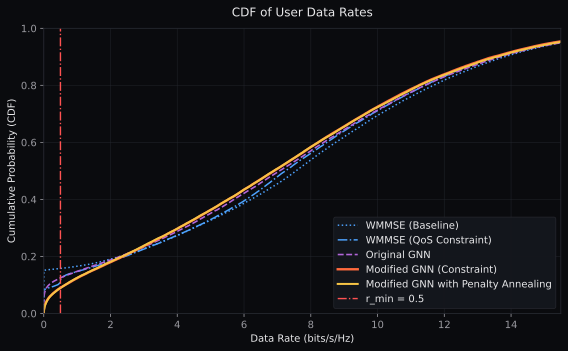

Approximating WMMSE with graph neural networks — for the classical interference channel, and for joint sensing-and-communication.
A densely connected MLP stops scaling once the network grows past a handful of links. A weight-sharing graph network tracks iterative WMMSE across K and generalises to a harder, constrained problem it never saw during training.
The interference channel, and a solver that's too slow to deploy.
Every receiver in a dense wireless network hears a signal of interest plus a crowd of interferers that happen to share the same frequency. The transmitter's leverage is power control — scaling each link up or down to keep its own SINR high without drowning its neighbours. For a K-link interference channel the sum-rate objective is non-convex, and iterative WMMSE is the practical optimum.
WMMSE is also slow. Every evaluation in this work measures it: at K=50 a single topology takes roughly half a second, and it scales super-linearly from there. For dense, frequently-recomputed allocations — vehicular links, ad-hoc clusters, beam management — the inner loop is the deployment blocker, not the objective.
The question motivating everything that follows: can a learned approximator recover WMMSE-quality allocations at a fraction of the runtime, and keep doing so as the network grows?
| WMMSE @ K=5 | 9 ms |
| WMMSE @ K=20 | 52 ms |
| WMMSE @ K=40 | 250 ms |
| WMMSE @ K=100 (extrapolated) | > 2 s |
Scenario_D2D/saves/.Scenario 1 · Device-to-device. Where the GNN earned the problem.
Setup
K transceiver pairs drop uniformly into a square field. Each Tx serves its own Rx, while every other link on the same channel leaks interference. Channels follow path-loss, log-normal shadowing, and Rayleigh fading — the textbook interference-channel benchmark.
Goal: pick a power vector p ∈ [0, P_max]K
that maximises sum-rate. We compare a supervised MLP and an unsupervised GNN
against iterative WMMSE.
Two models we built
Same problem, same data, two architectures.
| Input shape | K² floats |
| Output shape | K floats |
| Hidden layers | 3 × dense |
| Parameters | O(K²) |
| Loss | MSE vs WMMSE |
| Scales with K? | no — re-train per K |
aggr='max', unsupervised sum-rate loss.| Input | per-node features |
| Output | scalar per node |
| Conv layers | 4 × IGConv (max) |
| Parameters | ~5k, K-independent |
| Loss | −sum-rate (unsupervised) |
| Scales with K? | yes — one model for all |
The scaling finding — drag K to see the gap open.
Why the DNN stalls
The MLP bolts its input and output dimensions to K. Go from K=10 to K=50 and the weight matrices have to be rebuilt, retrained, and scaled up by the square of the link count. Nothing about a 10-link solution is reusable for a 50-link one.
The GNN passes one small module across however many nodes you hand it — parameter count does not depend on K at all. A model trained on one size runs unchanged on the next, and the message-passing aggregator lets every node peek at its neighbours exactly the way WMMSE's weighted-MMSE update does.
| Model | Input | Output | Params |
|---|---|---|---|
| MLP | K² floats | K floats | O(K²) |
| GNN | per-node | per-node | ~5k |
| WMMSE | channel matrix | K-vec | iterative |
Optional — QoS-constrained variant
A soft minimum-rate constraint per user can be baked into the loss. Unconstrained
WMMSE routinely starves the weakest links; the QoS-trained GNN trades a modest
slice of sum-rate for far fewer violations. Data lives in
Scenario_D2D/saves_QoS/.

Why a graph network — one module, every link.
The architecture is IGCNet from Shen et al. — four stacked message-passing layers
with aggr='max' that iteratively refine a scalar power logit on each link-node.
In JSAC the output head is a per-group softmax instead of a per-link sigmoid; the rest is
unchanged.
Scenario 2 · Joint sensing & communication. The GNN on a harder problem.
Setup
B Blue-car transmitters cluster on a road; each serves My Yellow sensing receivers and Mg Green communication receivers over M = My+Mg orthogonal channels. Same-channel links across different Blue cars interfere; intra-cluster channels are orthogonal by construction.
Two new constraints shape the problem: a hard per-Blue-car power budget (enforced by construction via per-group softmax) and a soft Yellow-SINR floor (squared hinge penalty in the loss).
Two edge types
Interference across Blue clusters and intra-group coordination within a cluster flow through the graph.
Hard group budget
Per-Blue-car softmax on the GNN output enforces Σgp = Pmax by construction — no projection step.
Soft Yellow floor
Squared-hinge penalty on SINRmin−SINRy pushes the model to respect sensing requirements.
Results — sweep over topology
Left column: Green sum-rate (bigger is better). Right column: Yellow violation % (smaller is better). Top row sweeps B; bottom row sweeps (My, Mg).
Inference time on the largest topology
| Method | B = 13, K = 65 | M = 10, K = 100 | Wall clock |
|---|---|---|---|
| Naive | 0.04 ms | 0.06 ms | baseline |
| WMMSE | 512 ms | 2199 ms | iterative |
| GNN | 180 ms | 415 ms | one forward pass |
Measured on CPU, averaged across the evaluation set. Source: Scenario_JSAC/save_main/results_sweep_*.pkl.
Layout gallery — what the allocation actually does
Same topology, three allocation methods. Rx brightness encodes allocated power; dashed grey lines are same-channel interference across Blue clusters.
Power allocations, up close. Drag, nudge, feel the physics.
JSAC — per-layout power map
Each Blue-car owns a fixed power budget. Click a Blue-car to isolate its cluster; toggle methods to watch the allocation rebalance.
Interference physics — drag a transmitter
Six transmitters on a field. Grab one, watch the channel-magnitude matrix redraw itself. Pure path-loss physics — no model inference here.